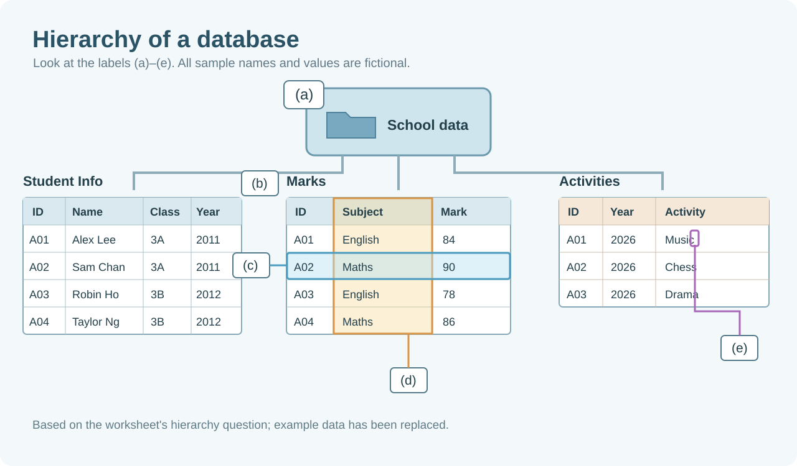

A paper form becomes a table. Each field needs a clear name and a suitable data type.
SMALLESTCharacterone symbol
→
DETAILFieldone column
→
ONE PERSONRecordone row
→
RELATED ROWSTablerecords
→
LARGESTDatabaserelated tables
Explore a WS1-style hierarchy diagram+

Based on Figure 1 in Activity Worksheet 1, with fictional data. The letters remain blank for class discussion.
01
COMMON MISTAKE
Leaving out the underscore
The worksheet uses underscores to join words in a field name. Keep the name consistent with the table you are using.
INCONSISTENTStudentID
→
WS1 STYLEStudent_ID
Names such as StudentName can be valid in other databases. Here, follow the worksheet’s naming convention and match the exact field name.
Also: Student_Name · Date_of_Birth · Is_Member
02
COMMON MISTAKE
In WS1, Gender is Text
Choose the type by asking: what does this field actually store?
GenderTEXT
Stores a category, such as M or F in the worksheet example.
Is_MemberYES/NO
Answers “Is the student a library member?” with Yes or No.
Two options on a form do not automatically make the field Yes/No. The worksheet records the gender category as text.
RememberStudent_ID is Text in WS1: it is an identifier, not a quantity to calculate.
02 / ACTIVITY WS1 · PART IV
A library mix-up. Who is who?
Start with a situation from the library membership table in Activity WS1.
IMAGINE YOU ARE THE LIBRARIAN
Two students share a name.
Two different students are both called Alex Lee and are both in 3A. One asks you to update his library membership record.
If you search by name or class alone, how can you be sure which record to update?
The names and IDs in this example are fictional.
RECORD AAlex LeeClass 3A
RECORD BAlex LeeClass 3A
THE SOLUTION
Give each record a reliable identifier.
A primary key is a field whose value uniquely identifies each record in a table. It helps us find, refer to and update the correct student record, even when names or classes repeat.
01Unique
No two records share the same key value.
02Not missing
A key cannot be NULL; also avoid blank values.
03Practical
Choose a value that remains reliable over time.
TRY THE WORKSHEET EXAMPLE
Which field could be the key?
Choose a field and compare the values across the records.
look down ↓
Library_MembersFictional records using the WS1 fields
Student_ID
Student_Name
Class
Gender
Is_Member
900101
Alex Lee
3A
M
Yes
900102
Alex Lee
3A
F
Yes
900103
Morgan Lam
3B
M
No
900104
Taylor Ng
3B
F
Yes
✓
Student_ID is suitable. Each record has a different ID; it can identify one student precisely.
All records shown here are fictional examples, using the field names from the worksheet.
ACTIVITY WS1 / PART IV · REVIEW THE ANSWERS
Turn the idea into an answer.
Q1 · What is a primary key? Why is it needed? 2 marks
A primary key is a field that uniquely identifies each record. It prevents two records from having the same key value and lets us locate and update the correct record, even when names or classes are repeated.
Q2(a) · Which field? 1 mark
Student_ID
Each student has a different, non-missing ID.
Q2(b) · Why this field? 2 marks
Student_ID is unique for each student. Student_Name and Class are unsuitable because two or more students can share them.
Put it together: state the field, explain why its values are unique, and explain why the alternatives may repeat. A key prevents duplicate key values; other fields can still repeat.
03 / SIMPLE SQL
Ask the database a question.
SQL stands for Structured Query Language. A query tells a database what data to return.
READ A QUERY
What would you like to see?
Read the statement one line at a time. The result is a table containing the selected data.
Writing convention Use UPPERCASE keywords for the worksheet. End the statement with a semicolon.
ANATOMY OF A QUERYSQL
SELECT ProductName, Price
FROM Products
WHERE Price > 20;
SELECT columnsFROM tableWHERE condition; end
01 / SELECT
Choose columns
SELECT ProductName, Price shows those two fields. SELECT * means all fields.
02 / FROM
Choose a table
FROM Products tells SQL which table to read. Use the exact table and field names.
03 / WHERE
Choose records
WHERE Price > 20 keeps only rows that meet the condition.
✎
Text and numbers Write a text value in single quotes, such as '3A'. A numeric value, such as 25, has no quotes.
↕
Sort the result ORDER BY Price DESC sorts highest first. ASC sorts lowest first and is the default.
AN INTERACTIVE EXAMPLE
Try the query notebook.
Choose a topic, then run its example. Read the result table before moving on.
SQL / 01
SAMPLE DATA / INPUT
Products
FICTIONAL
Keep these six records in view while you read the query and its result.
Fictional sample Products table
ProductID
ProductName
SupplierID
CategoryID
Price
Run an example to highlight the rows used in the result. These are not the W3Schools data.
EXAMPLE 01
Select columns
SQL
SELECTFROMWHEREORDER BYAND / OR / NOT; end
Compare the result with the sample data.
Choose an example and press Run example to see its result.
KEEP THESE IDEAS CLOSE
Small keywords, different jobs.
Use these notes while exploring the examples above.
01
AND / OR / NOT
AND: every condition must be true. OR: at least one must be true. NOT: excludes a condition.
Use parentheses when combining conditions so the grouping is clear.
02
DISTINCT / IN
DISTINCT removes repeated result values. IN checks whether a value is in a list.
03
BETWEEN
BETWEEN 12 AND 30 includes both 12 and 30. It selects values within a range.
04
MIN / MAX / COUNT
MIN and MAX find the smallest and largest values. COUNT(*) counts rows.
05
AVG / SUM / AS
AVG finds a numeric average; SUM adds values. AS gives a result column a readable label.
COUNT(column), AVG and SUM ignore NULL values; COUNT(*) counts rows.
06
Comparison operators
= equal · <> not equal · > / < greater / less · >= / <= include the boundary.
The guide also lists LIKE for text patterns.
Optional: more examples from the SQL notes+
Count different values
SELECT COUNT(DISTINCT CategoryID) AS CategoryCount
FROM Products;
DISTINCT removes repeated category values before they are counted.
Exclude a list or range
WHERE SupplierID NOT IN (1, 3);
WHERE Price NOT BETWEEN 12 AND 30;
NOT IN excludes listed values. NOT BETWEEN selects values outside the inclusive range.
Sort by more than one field
ORDER BY CategoryID ASC, Price DESC;
Sort by category first; rows in the same category are then ordered by price from highest to lowest.
Use a query inside IN
SELECT * FROM Customers
WHERE Country IN (SELECT Country FROM Suppliers);
The inner query returns supplier countries. The outer query finds customers in those countries.
As shown in the notes, BETWEEN can also compare text or dates; exact date syntax depends on the database system.
04 / QUICK CHECK
Pause. Think. Then choose.
Check your understanding before attempting the worksheet questions. Each item gives feedback after you choose.
READY TO PRACTISE?
Try your own query.
The worksheet links to the W3Schools SQL editor. Its data is different from the six fictional rows above.